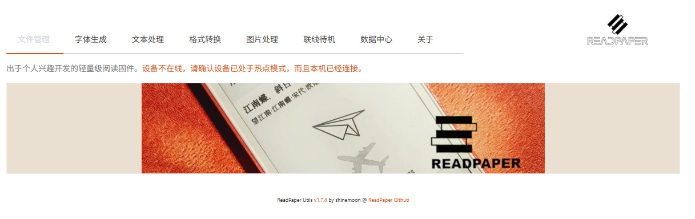
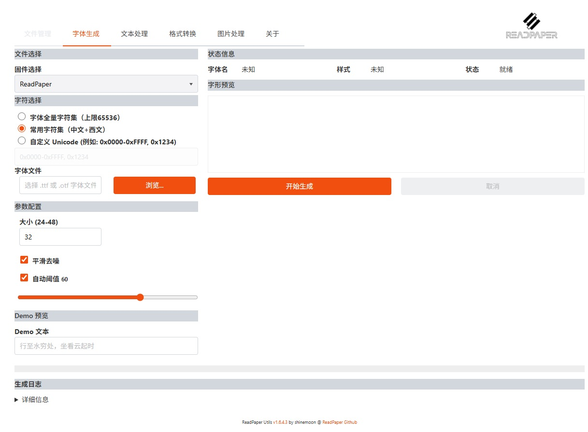
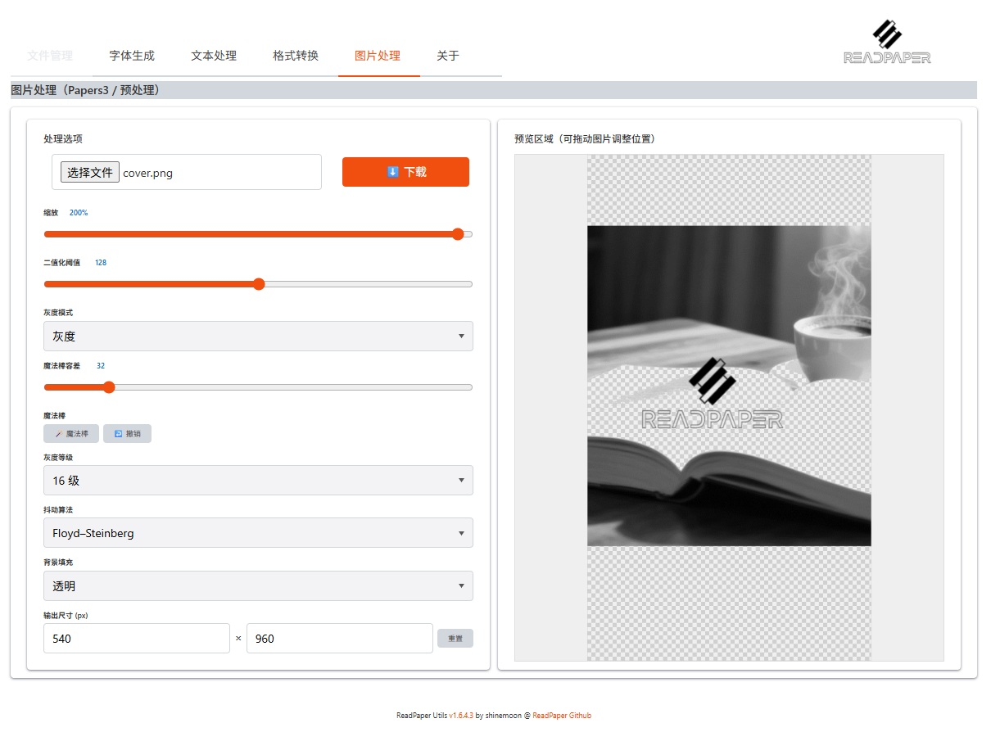

关于 ReadPaper
ReadPaper Utils 浏览器扩展

从 V1.3 起，推荐使用跨平台浏览器扩展进行文件管理、字体生成与相关工具处理；旧网页入口仍可使用，但后续不再扩展。
扩展下载：
- ReadPaper Utils @ Google Chrome（需可访问 Chrome Web Store）
- ReadPaper Utils @ Microsoft Edge
- ReadPaper Utils @ Firefox
- 安卓设备可安装 Firefox 使用本工具；
- iOS 端目前通常不支持浏览器扩展安装；
- 部分安卓第三方浏览器也可支持 Chrome/Edge 扩展。
文件管理与 HTTP API
为了配合扩展实现文件访问，固件提供 HTTP API。只要接口保持一致，即可通过扩展实现基础管理功能。
字体与显示
字体文件放置于 SD 卡 /font 目录，并在主菜单中启用。切换字体（尤其 size 变化）会触发索引重建并跳回第一页。
可通过扩展进行字体压缩与生成，当前支持 ReadPaper 与 EDCBook 两种字体类型。
字体体积取决于字符集和字号，常见约 2MB，极端情况下 ReadPaper 字体可到 <15MB，EDCBook 字体可到 <25MB。

可参考仓库中的 Fonts 目录 预生成字体。
目录与书签
目录功能依赖与书籍同名的 .idx 文件，请将工具生成的 idx 文件上传到 /books 目录。
每本书支持 10 个循环书签位，以及 1 个 Auto 书签位（锁屏/关机等场景自动保存，记录本书已读最远位置）。
目录与书签仅能在已完成分页的范围内跳转，未分页部分可见但不可跳转。
壁纸
壁纸请上传到 SD 卡 /image 目录，系统按如下优先级选择锁屏图案：
- 优先设定当前书籍同名壁纸;
- 尝试模糊匹配壁纸（例如《古龙作品集-XXXXX.txt》会尝试匹配 "古龙N.jpg" / "作品集N.jpg"，N 可省略）;
- 然后是根据设备的显示配置，使用default.jpg，或者是随机的图片；
- 当卡上不存在随机图片，或者虽然设置为默认壁纸但是不存在default.jpg时，则使用系统自带壁纸;
支持透明 PNG，可借助扩展工具做简单处理：

自动阅读
阅读中点击屏幕右下角，会显示自动阅读设置条；可在四档速度中选择，点击播放后返回阅读界面生效。
自动翻页期间，屏幕中部会显示卡标提示。
截屏
从固件1.6.8版本开始支持截屏
- 操作方式：大部分界面下，都可以在顶部中央双击，会将截屏保存到SD卡的/screenshots目录中;
- 从扩展的1.6.6版本开始，可以在文件管理页面下载和删除截屏文件；
如果 SD 卡根目录存在 scback.jpg，则截屏会以该图片作为背景生成，建议背景尺寸 540x960。
阅读记录
从固件1.6.8版本开始支持阅读记录细节
- 在阅读菜单界面，点击"已读"的信息部分，将会进入阅读记录细节汇总页面；
- 从扩展的1.6.6版本开始，可以在文件管理页面点击按钮进入完整的阅读记录报告页面（可选单本、多本、全部），并且可以生成简单、标准、详细三种图片汇总；
- 从扩展的1.6.11版本开始，支持“数据中心”，每次导入会自动合入本地数据库，支持脱机管理、JSON 导入导出与查重合并，方便持久保存阅读历史；
联线待机
从固件 V1.7.0 开始支持联线待机（可理解为轻量化 TRMNL 风格信息屏）：
- 通过热点连接后，扩展（V1.7+)可以配置设备侧的WIFI连接和WEBDAV连接；
- 扩展可以通过添加、定制组件的方式来定义“联线待机”时的具体显示的格式和内容，之后可以按照需要将该配置同步到WEBDAV云端、设备侧或者导出到本地保存；
- 设备通过主菜单-连接-联线待机进入该模式，试图从WebDAV同步显示设置，如果不成功回退到使用本地或者上一次的配置进行显示;
- 可在无网络时通过热点模式将配置写入设备，至少显示预渲染与固定信息组件。
Q&A
什么时候会触发书籍重新索引？
新打开或者配置变化导致分页会事实上改变的时候，包括：
- 新打开书籍;
- 切换横排竖排;
- 修改了字体size;
- 手动菜单选择重建索引;
提示：
- 索引期间可能有偶尔延迟现象，如果可能建议稍候等书籍索引完成，索引期间，翻页、跳转（包括书签跳转）都只能在已经完成索引的范围内操作，索引未覆盖的部分的书签会显示灰色数字；
- 索引期间，最好避免WIFI/USB连接。虽然已经尽力做了保护，（但是...）实测依然有偶发冲突的风险;
- 如果不想重建某本书的索引，例如是在读另一本书的时候切换了字体，只要确保切回该书时，配置也改回去即可，因为触发重索引的会是在打开书籍的时刻检测和触发的。
手机上能使用这个工具吗？
安卓端只要浏览器支持扩展，理论上即可使用（推荐 Firefox 安卓版）；iOS 端目前通常不支持扩展安装。
使用建议
- 遇到兼容性问题，可先尝试恢复出厂（仅清理配置、书签与索引，不删除书籍/字体）。
- 配置与记录保存在 SD 卡，可自由尝试其它固件。
- 索引期间建议尽量避免 WIFI/USB 并发操作，降低偶发冲突风险。
致谢
感谢 M5Stack 的优雅硬件设计；特别感谢 @梦西游啊游 的开创性工作为我带来的启发。
某种意义上他的EDCBook是对主流阅读器厂商们近年一味力大砖飞，靠堆配置，而不是沉下心来真的改进“读书”体验的趋势的一种有力的回答。
作者：@shinemoon
版本历史
- V1.5 - UI调整 / Bug修正 /字体调整
- V1.4
- V1.4.4 — 字体调整优化
- V1.4.3 — 增加少量显示选项 / 调整UI / 自动翻页
- V1.4.2 — 竖排显示优化 / 其他样式优化 / 问题修正
- V1.4 — 浏览器扩展支持 Epub 转换和目录生成
- V1.3 — 浏览器插件支持管理及字体生成 / API支持
- V1.2
- V1.2.10 — 简单书签管理功能 / 自动旋转
- V1.2.9.4 — 索引优化
- V1.2.9.3 — 优化与微调；部分实验功能
- V1.2.9.2 — 底层重构与稳定性修正
- V1.2.9.1 — 深色模式支持 / 壁纸工具优化
- V1.2.9 — 竖排支持 / 锁屏调整
- V1.2 — 繁简转换支持等修正